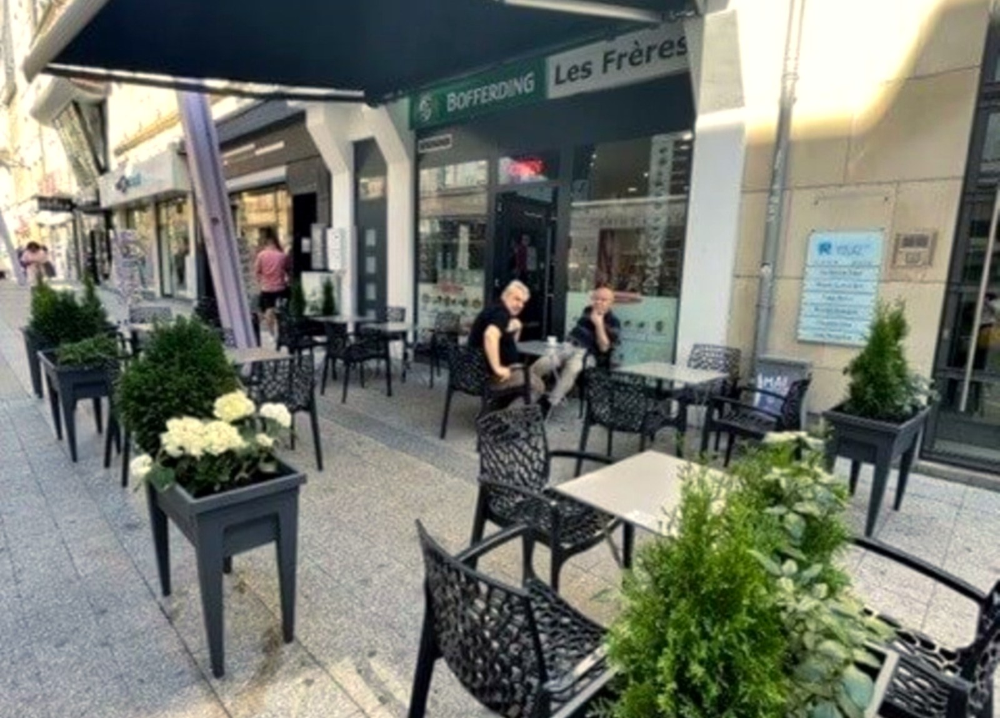
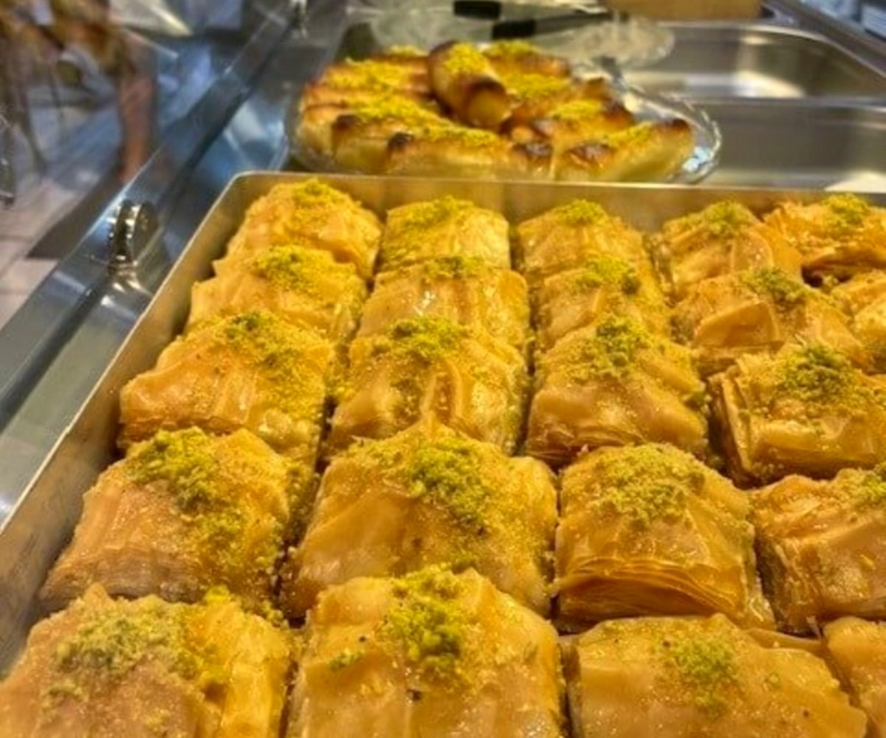
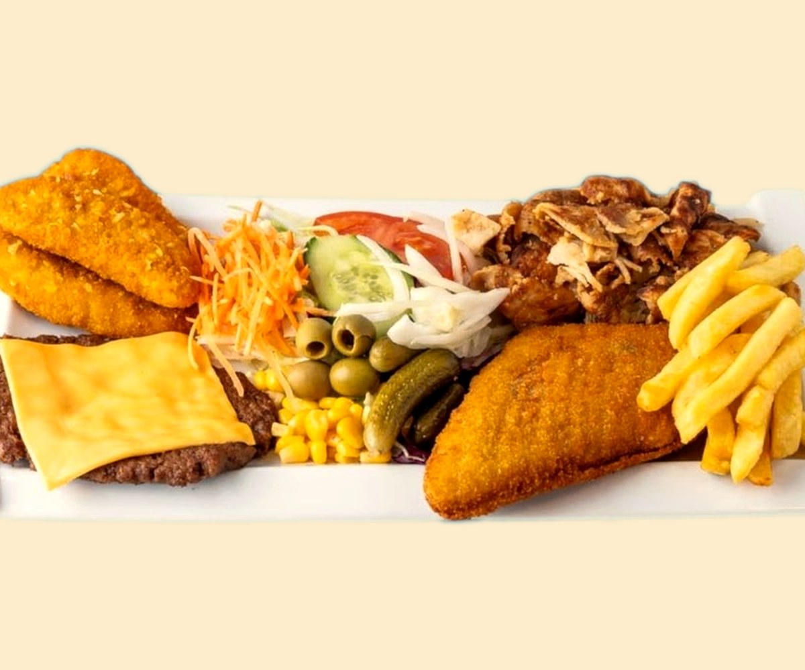
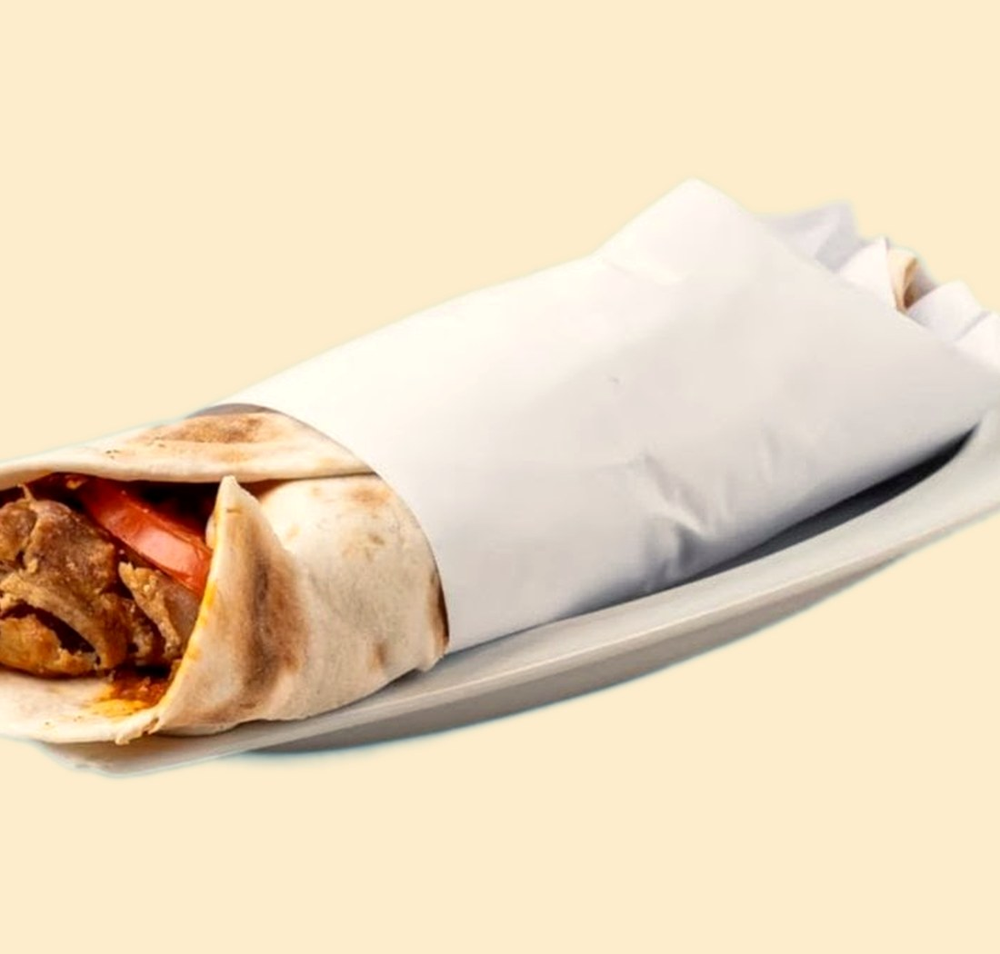
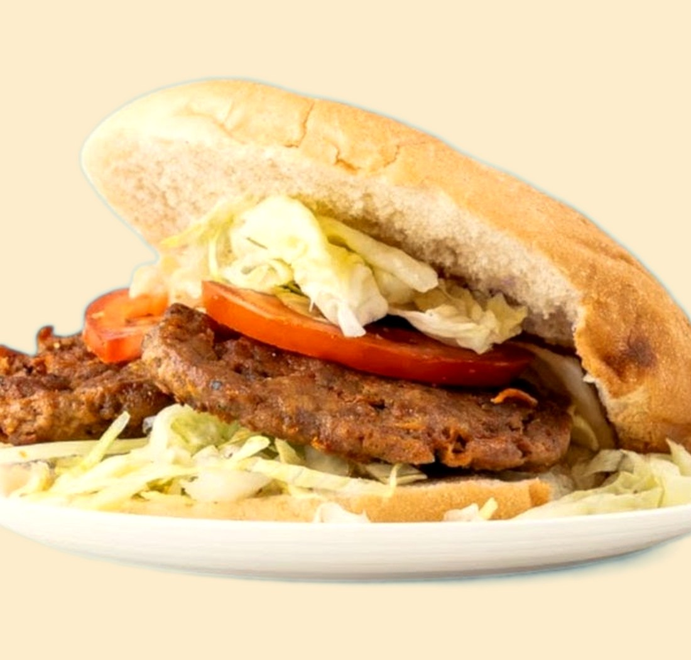
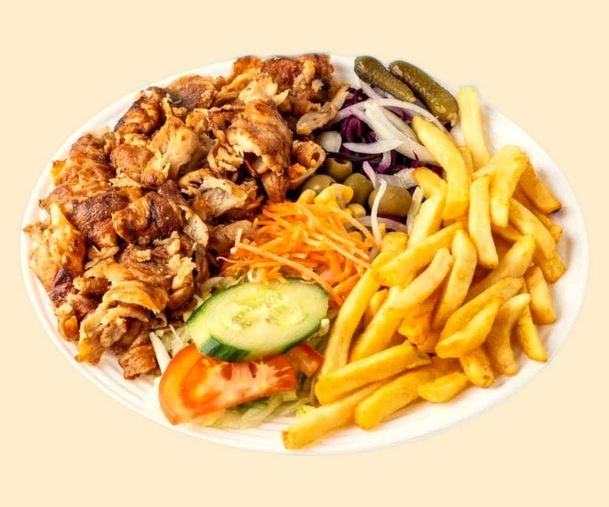
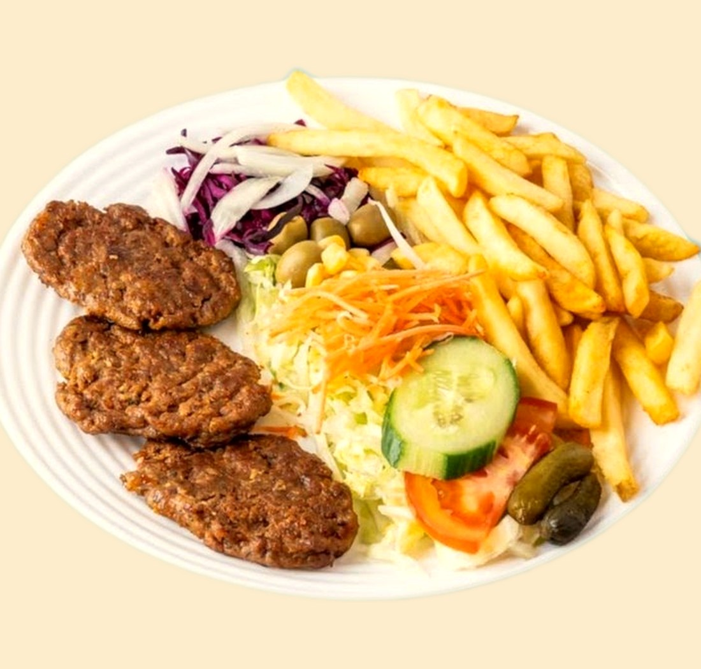
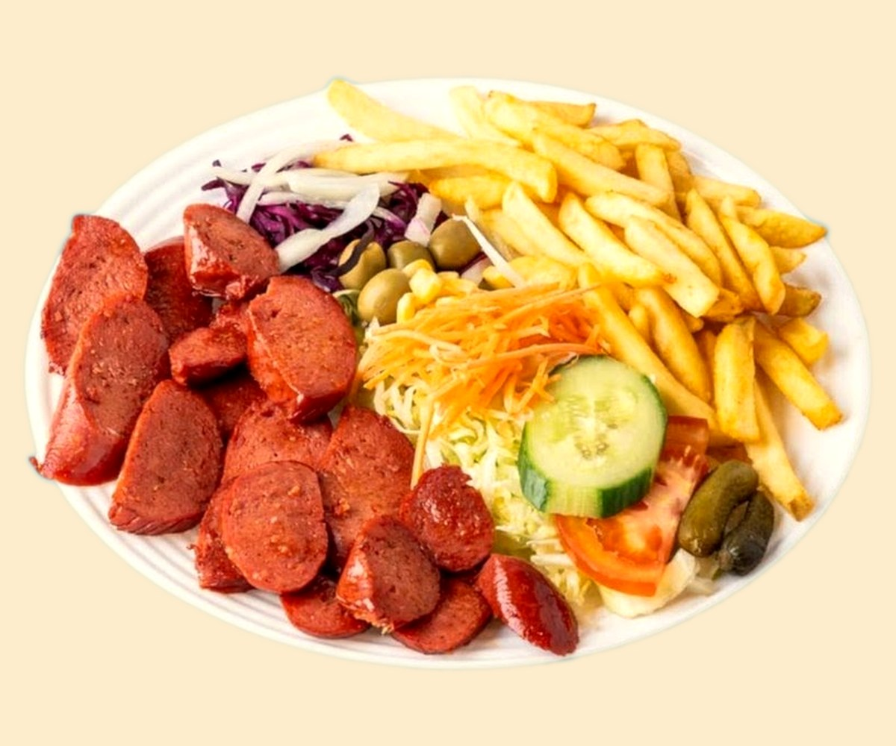
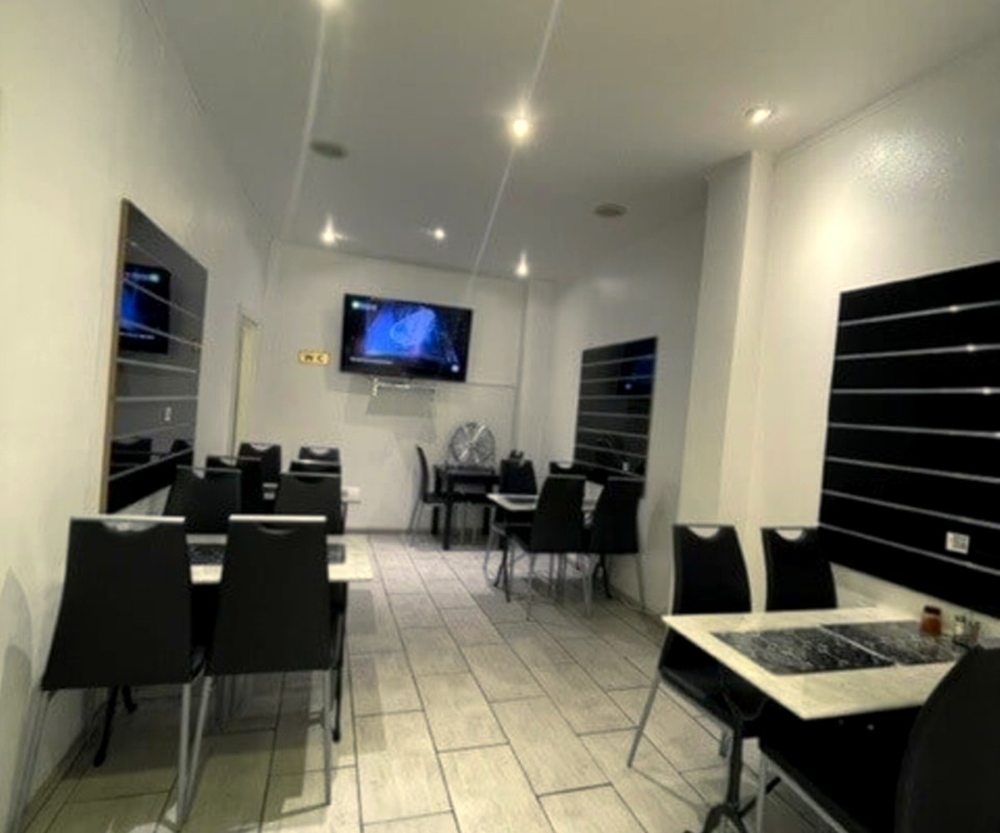

Les Frères
Kebab au charbon, assiettes généreuses et douceurs irakiennes faites maison — en plein cœur d'Esch.
grillé au charbon, fait sur place
recettes irakiennes, à Esch
en pleine rue piétonne

Faites maisonLes douceursirakiennes.
Baklava à la pistache, znoud el sit dorés, kunafa fondante — préparés à la maison, à la façon irakienne.
C'est ce que les habitués reviennent chercher. Le sucre, la pistache et l'eau de fleur d'oranger : la vraie fin d'un repas irakien, à deux pas de la place de la Résistance.
Du grill, généreux
Kebab et dürüm au charbon, escalope croustillante, falafel maison, grandes assiettes à partager. Halal, frais, sans détour.






Ce qu'on sert
Le meilleur du kebab et de la cuisine irakienne, à prix doux. Voici la carte — quelques spécialités se confirment à la maison.
Kebabs & sandwichs
Falafel & végé
Les assiettes
Douceurs faites maison
Spécialité irakienne
Prix relevés sur la carte de livraison publique (Foostix, semaine du 24–30 août 2026), à titre indicatif. Les prix en salle, le beryani et la kunafa sont à confirmer avec la maison.
Une famille,depuis 2016.
Les Frères, c'est une cuisine irakienne tenue en famille au cœur d'Esch — le kebab grillé au charbon, les assiettes généreuses, et les douceurs préparées à la main.
Halal, frais, à prix juste. On y vient pour un dürüm sur le pouce le midi, et on repart avec une boîte de baklava pour la maison.

Nous trouver
L-4010 Esch-sur-Alzette
Midi & soir · fermé le dimanche · horaires à confirmer